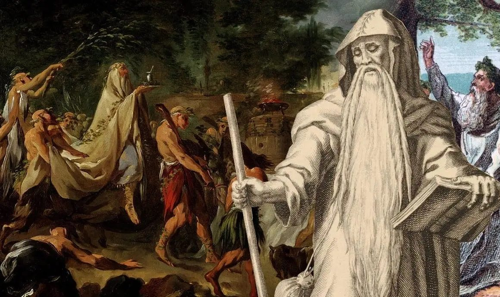
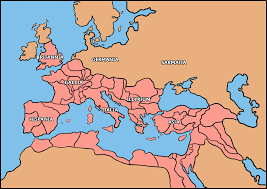

Let's refresh what we've learnt recently about perfect tense, imperfect tense, and superlatives. Click on each sentence to check your answer.
1. What tense is: puellae cucurrērunt?
Present
Imperfect
Perfect
2. What tense is: māter labōrābat?
Present
Imperfect
Perfect
3. Translate: crūdēlissimus
cruel
more cruel
very cruel
4. What tense is: mīlitēs vēnērunt?
Present
Imperfect
Perfect
5. Translate: cupiēbat
wants
was wanting
wanted (once)
Direct Teaching: Who Were the Druids? (7 minutes)
Before we read today's story, we need to understand who the Druids actually were. They're going to be discussed by our characters, and they had different opinions about them!

A modern artist's impression of a Druid - but what do we actually know?
What Were Druids?
Druids were the priests, teachers, and judges of the Celtic peoples in Britain and Gaul (France). They were highly respected and powerful members of society - a bit like a combination of priests, lawyers, and professors all in one!
What did Druids do?
• Religious duties: They led religious ceremonies, made sacrifices to the gods, and interpreted signs from nature
• Legal duties: They settled disputes between people and tribes - acting like judges
• Educational duties: They taught young people, passing on knowledge about history, poetry, astronomy, and religion
• Political influence: They advised tribal leaders and could even decide whether tribes should go to war
The Deal Crown - possibly worn by a Druid or tribal leader
Why Don't We Know Much About Them?
Druids deliberately didn't write things down. They believed their sacred knowledge should only be passed on orally (by speaking and memorising). This means almost everything we know about Druids comes from Roman writers - and Romans had their own reasons for how they portrayed Druids.
The Roman Problem: When Romans invaded Britain and Gaul, Druids encouraged resistance. They told people to fight back against the invaders. This made Romans see Druids as dangerous enemies. Roman writers like Julius Caesar wrote about Druids - but were they being fair and accurate, or were they exaggerating to make Druids look bad?

Druids were found throughout Britannia and Gallia
Different Perspectives in Today's Story
In the story you're about to read:
• Gisco and Indus (speaking from a Roman viewpoint) will say negative things about Druids
• Catia (who is British) will have a different opinion
Think about: who should we believe? Why might they disagree?
Story: Druides (Lines 1-11)
After Catia finished telling the story about Luccus, Sabina has some questions...
postquam Catia rem cōnfēcit, Sabīna dīxit, 'Luccus erat iuvenis stultus. in Britanniā omnēs iuvenēs contrā Rōmānōs pugnāre volēbant?'
Key vocabulary:
postquam = after
rem cōnfēcit = finished the story
stultus = foolish, silly
contrā = against
volēbant = were wanting (imperfect)
💭 What does Sabina think of Luccus?
She thinks he was foolish/silly (stultus). She's asking whether all young Britons wanted to fight the Romans.
No (minimē). Many British chiefs didn't want to fight because they desired peace. Some chiefs cooperated with Rome.
'sed Druidēs ad bellum iuvenēs Britannicōs saepe incitābant,' dīxit Indus.
Key vocabulary:
Druidēs = Druids (priests of Britain and Gaul)
ad bellum = to war
incitābant = were inciting, were stirring up
saepe = often
Important moment
Now Indus introduces the Druids - and immediately says they were inciting young Britons to war. Remember: Indus is speaking from a Roman perspective here.
'Druidēs vīdistī?' rogāvit Sabīna. 'ubi in Batāviā habitābam, Druidēs nōn vīdī,' respondit Indus. 'sed in Britanniā, sīcut in Galliā, multī Druidēs aderant.'
Key vocabulary:
vīdistī = did you see? (perfect)
ubi = when
Batāviā = Batavia (Netherlands)
habitābam = I was living (imperfect)
sīcut = just as, like
Galliā = Gaul (France)
aderant = were present (imperfect)
Druids were found in both Britannia (Britain) and Gallia (Gaul/France)
'dē contrōversiīs inter hominēs et gentēs cōnstituēbant,' inquit Catia.
Key vocabulary:
contrōversiīs = disputes, arguments
inter = among, between
gentēs = tribes, peoples
cōnstituēbant = were deciding, were settling
💭 What does Catia say Druids did? How is this different from what Indus said?
Catia says they decided disputes between people and tribes - a peaceful, judicial role like judges. This is very different from Indus saying they incited people to war. Catia (a Briton) has a more positive view.
Pause and think
Notice how different people describe Druids differently:
• Indus (speaking for Romans): Druids incite war
• Catia (British): Druids settle disputes peacefully
Who should we believe?
Consolidation Questions (6 minutes)
Answer these questions about what we've just read.
1. What did Sabina think of Luccus?
She thought he was foolish/silly (stultus).
2. Did all British chiefs want to fight the Romans?
No. Many British chiefs didn't want to fight because they desired peace (pācem cupiēbant).
3. According to Indus, what did Druids do?
He said they often incited young Britons to war (ad bellum iuvenēs Britannicōs saepe incitābant).
4. Had Indus seen Druids when he lived in Batavia?
No, he hadn't seen Druids there (Druidēs nōn vīdī).
5. According to Catia, what did Druids do?
She said they decided/settled disputes between people and tribes (dē contrōversiīs inter hominēs et gentēs cōnstituēbant).
6. CHALLENGE: Find THREE imperfect tense verbs in lines 1-11.
Examples: volēbant, nōlēbant, cupiēbant, incitābant, habitābam, aderant, cōnstituēbant. (Any three are correct!)
Plenary: What's Next? (2 minutes)
How Druids are often depicted - but is this accurate?
So far we've heard two different views of the Druids:
Roman view (Indus)
Druids incited young people to fight against Rome - they were dangerous troublemakers.
British view (Catia)
Druids settled disputes peacefully - they were judges and wise leaders.
In our next lesson, Gisco and Indus will tell Sabina what they claim Druids did in their religious ceremonies. Catia won't be happy about it...
Remember for next time
• Keep thinking critically: who is telling this story?
• Why might Romans want to make Druids sound scary?
• What would Britons have thought about these claims?